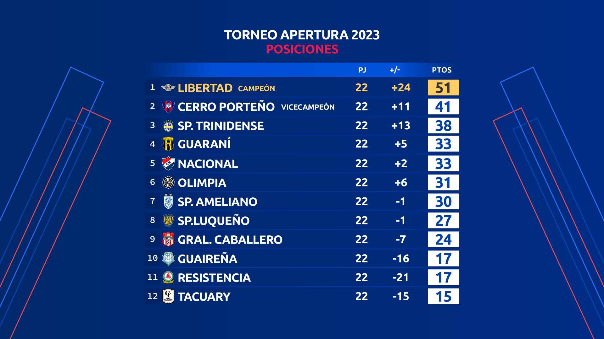

la tabla de posiciones al finalizar el torneo apertura del futbol paraguayo

El Gallo, sin margen de error, recibe a Atyrá en La Terraza
Con dos encuentros se inicia la jornada 25 del atrapante torneo de la División Intermedia.
El certamen tiene como principal aspirante al ascenso a Sol de América (54) y sus inmediatos perseguidores, el 2 de Mayo (48), Recoleta e Independiente (43) y un poco más rezagado con referencia al escolta, Fernando de la Mora con 41 unidades.
l Gallo Norteño está segundo en la tabla y recibe desde las 19:15 a Atyrá FC (con 19), con la firme consigna de sumar los puntos en juego para seguir en zona de ascenso a Primera División.
El 2 de Mayo pedrojuanino llega motivado después de hilar tres victorias, la última ante Pastoreo en calidad de visitante por 1-0.
Recoleta se frena y queda en el tercer lugar
Recoleta no pasó del empate ante 24 de Setiembre de Areguá y perdió su condición de escolta quedando relegado al tercer lugar.
Recoleta igualó este jueves 1-1 en su visita al 24 de Setiembre de Areguá y desperdició la oportunidad de seguir como escolta del líder Sol de América.
El equipo funebrero queda en el tercer lugar de la clasificación con 43 puntos. En el segundo lugar está 2 de Mayo con 45 y el líder es Sol de América con 51.
Otros resultado registrados el día de hoy tuvieron como ganador a Rubio Ñu que venció 1-0 a Carapeguá, Martín Ledesma ganándole 4-2 a Pastoreo e Independiente de Campo Grande goleando 0-3 a Fernando de la Mora.